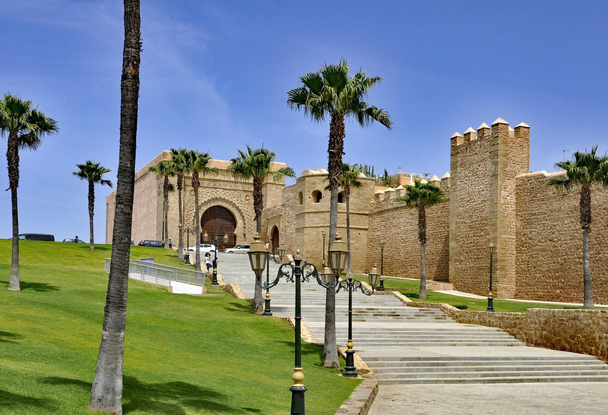

Private day trip Full-dayRabat Day Trip from Casablanca with Licensed Guide
Visit Hassan Tower, the Mausoleum of Mohammed V, the Kasbah of the Udayas, Andalusian Gardens, and Bouregreg river views.
- Hassan Tower & Mausoleum
- Kasbah of the Udayas
- Private transport included